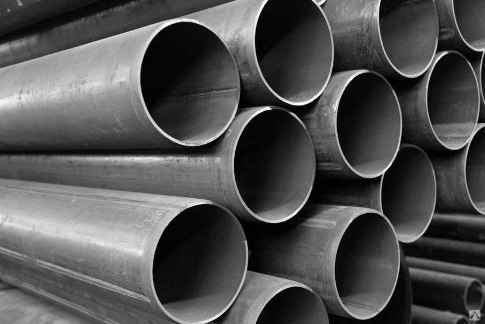

Трубы электросварные прямошовные
ГОСТ 10704-91
Трубы электросварные прямошовные
Их основные диаметры: 57; 60; 63,5; 76; 89; 102; 108; 114; 127; 133; 140; 146; 159; 168; 178; 193; 219; 245; 273; 325; 377; 426; 530. Качеством, за которое особенно ценится труба электросварная, является исключительная универсальность ее применения. Это в первую очередь касается изделий круглого сечения, которые успешно используются промышленными предприятиями и строительными организациями, а также при монтаже трубопроводов. Электросварная труба часто применяется в качестве расходного материала для производства различных изделий.
Электросварные трубы в зависимости от характеристик шва могут быть двух типов:
- со сварным швом, который выполняется параллельно их оси (поскольку швы у таких труб расположены по прямой линии, то и название они получили соответствующее – прямошовные электросварные стальные трубы);
- со сварным швом, выполненным по винтовой линии (такие трубы называют спиралешовными).
Одним из важнейших направлений использования стальных прямо шовных электросварных труб является монтаж трубопроводов тепло магистралей, а также конструкций, предназначенных для транспортировки нефти, газа и других веществ.
Благодаря таким преимуществам, как доступная стоимость, долговечность и простота монтажа, данные изделия получили широкое распространение в различных сферах экономики.
МПК Сталь» предлагает купить трубы в любом неограниченном количестве, в любое удобное время. Нарезка, подбор отводов, без которых не обходится изготовление трубопровода, выбор продукции по толщине стенки и диаметру – всё это мы поможем вам сделать. У нас самый широкий выбор сортового металлопроката и ассортимент постоянно расширяется.
